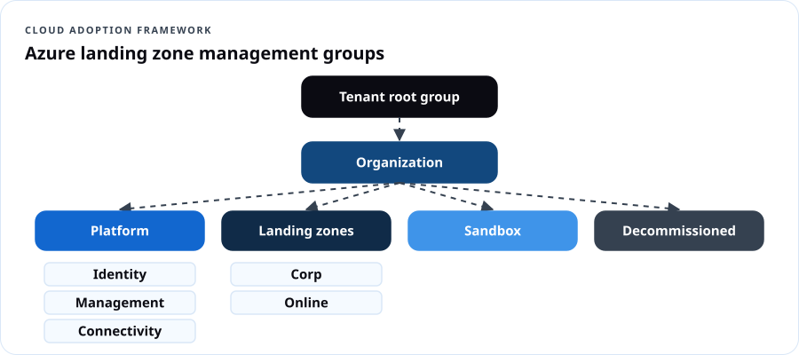
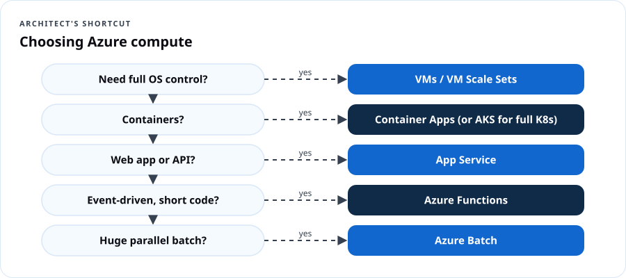
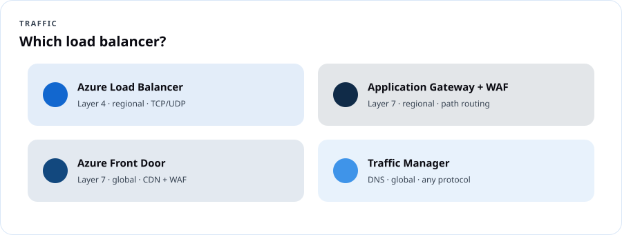

AZ-305 Azure Solutions Architect
Course overview
Administrators build what's on the ticket. Architects decide what should be on the ticket. AZ-305 tests whether you can read requirements — uptime, budget, compliance, latency, team skills — and recommend the Azure design that satisfies them, with trade-offs stated out loud. This course uses Microsoft's skills outline as of April 17, 2026, the Azure Well-Architected Framework (WAF) and the Cloud Adoption Framework (CAF).
Credential path
| Requirement | Detail |
|---|---|
| Prerequisite certification | Azure Administrator Associate (AZ-104) must be held to be awarded the Expert certification |
| Exam | AZ-305: Designing Microsoft Azure Infrastructure Solutions |
| Passing score | 700 |
| Price | $165 USD in the U.S. |
| Renewal | Annual free online assessment |
| Weights | Identity, governance & monitoring 25–30% · Data storage 20–25% · Business continuity 15–20% · Infrastructure 30–35% |
The architect's habit: requirement → constraint → option → trade-off → decision
Every DCT design answer is written in this shape:
Requirement: Patient files must survive a regional outage with read access. Constraint: Budget-sensitive, nonprofit. Options: GRS, RA-GRS, RA-GZRS, object replication. Trade-off: RA-GZRS adds zone resilience at higher cost. Decision: RA-GRS for documents; revisit if a zone outage is unacceptable.
Dope Translation: An admin is the contractor who builds the house to the blueprint. The architect is the one who asks how many kids you have, whether grandma's moving in, what the flood zone is, and what you can afford — then draws the blueprint. And when the inspector asks "why'd you do it like that?", the architect has an answer.
The Well-Architected pillars (your design checklist)
| Pillar | Ask |
|---|---|
| Reliability | What fails, and how do we keep going or recover? |
| Security | Who can get in, and how do we limit the blast radius? |
| Cost Optimization | Are we paying only for value? |
| Operational Excellence | Can we deploy, observe and fix it repeatably? |
| Performance Efficiency | Does it scale to demand at acceptable latency? |
Syllabus
| # | Lesson | Domain |
|---|---|---|
| 1 | Logging and monitoring design | Identity, governance & monitoring |
| 2 | Authentication, authorization, secrets | Identity, governance & monitoring |
| 3 | Governance design and landing zones | Identity, governance & monitoring |
| 4 | Relational, semi-structured and unstructured data | Data storage |
| 5 | Data integration and analysis | Data storage |
| 6 | Backup, DR and high availability | Business continuity |
| 7 | Compute and application architecture | Infrastructure |
| 8 | Migrations and network design | Infrastructure |
Assessment
Design studio submissions (8) 40% · Capstone architecture + defense 35% · Knowledge checks 10% · Practice exam 15%.
Lesson 1 — Design logging and monitoring
Objectives: recommend a logging solution; a solution for routing logs; a monitoring solution.
Decision guide
| Need | Recommend |
|---|---|
| Central query of logs across subscriptions | Log Analytics workspace(s) — design count by data residency, access control and cost (one central workspace is common; split for sovereignty or chargeback) |
| Route platform/resource logs | Diagnostic settings → Log Analytics (query/alert), Storage (cheap archive/compliance), Event Hubs (stream to SIEM/third parties) |
| Guest OS + VM performance | Azure Monitor Agent with data collection rules |
| App performance, distributed tracing | Application Insights (workspace-based), OpenTelemetry |
| Security analytics / SIEM | Microsoft Sentinel on the workspace |
| Cost control for logs | Table plans (Analytics vs. Basic vs. Auxiliary), retention tiers, commitment tiers, DCR transformations to drop noise |
| Dashboards | Azure Workbooks, Azure Managed Grafana |
| At-scale governance of diagnostics | Azure Policy DeployIfNotExists for diagnostic settings |
Real Talk: A county IT office must keep audit logs for 7 years but only query the last 90 days. Design: diagnostic settings to a workspace with 90-day interactive retention and long-term retention up to 7 years (or archive to immutable storage), Sentinel for security events, Policy to enforce diagnostics on every new resource.
Design studio 1
Design the observability for a 3-tier web app in two regions used by a state agency: what goes where, retention, who can query what (resource-context RBAC vs. workspace RBAC), and the monthly cost levers.
Lesson 2 — Authentication, authorization and secrets
Objectives: recommend authentication, identity management, authorization for Azure and on-prem resources; manage secrets, certificates and keys.
| Requirement | Recommend |
|---|---|
| Employees, SSO to SaaS and Azure | Microsoft Entra ID, Conditional Access, MFA, passwordless |
| Hybrid AD users | Entra Cloud Sync (lightweight) or Entra Connect Sync (advanced) with password hash sync (+ Seamless SSO); pass-through auth or federation only when required |
| Partners | Entra External ID B2B with cross-tenant access settings |
| Consumers | Entra External ID for customers (CIAM) |
| App → Azure resource, no secrets | Managed identities (system- or user-assigned) |
| Admin elevation | PIM (just-in-time, approval, time-bound), access reviews |
| Lifecycle (joiners/movers/leavers) | Entra ID Governance: entitlement management, access packages, lifecycle workflows |
| On-prem apps for remote users | Entra Application Proxy or Global Secure Access (Private Access) |
| Azure resources | Azure RBAC at the right scope + ABAC conditions for storage |
| On-prem resources | Entra Kerberos, Entra Domain Services, Azure Arc + RBAC for servers |
| Secrets, keys, certificates | Azure Key Vault (RBAC model, soft delete + purge protection, private endpoint), Managed HSM for FIPS 140-3 Level 3 single-tenant keys |
Dope Translation: Managed identity is the ID badge the building prints for the robot — no password on a sticky note, nothing to steal from the code. Key Vault is the safe. PIM is the safe that only opens for an hour, with a manager's sign-off, and logs who opened it.
Design studio 2
A city's 311 app runs on App Service, reads Azure SQL and Blob, and calls a vendor API with a secret. Remove every stored credential and justify each choice.
Lesson 3 — Design governance
Objectives: recommend management group, subscription and resource group structure and a tagging strategy; managing compliance; identity governance.
Azure landing zones (CAF)

A typical CAF hierarchy: Tenant root → Organization MG → Platform (Identity, Management, Connectivity) + Landing zones (Corp, Online) + Sandbox + Decommissioned. Subscriptions are the unit of scale and isolation ("subscription democratization"). Policy and RBAC are assigned at MGs; workloads get their own subscriptions.
Tagging strategy
Mandatory: costCenter, owner, environment, dataClassification, app. Enforce with Policy (Deny on RGs, Modify/inherit on resources). Keep values in a controlled vocabulary.
Compliance
Built-in regulatory compliance initiatives in Azure Policy and Defender for Cloud (e.g., NIST SP 800-53 Rev. 5, FedRAMP High, CIS, PCI DSS); Microsoft Purview for data governance; Azure Government when a workload requires it. Exemptions are documented and time-bound.
Real Talk: A DMV-area agency needs NIST 800-53 alignment. Design: assign the NIST SP 800-53 Rev. 5 initiative at the Landing Zones MG in Audit, track in Defender for Cloud regulatory compliance, then flip high-impact controls (allowed locations, no public IPs in Corp, TLS minimums) to Deny after a remediation sprint.
Design studio 3
Design the MG/subscription/RG structure and tags for an organization with three programs (Youth, Seniors, Workforce), separate dev/prod, a shared networking team, and grant-funded chargeback.
Lesson 4 — Data storage: relational, semi-structured, unstructured
Objectives: relational storage, service and compute tiers, scalability, data protection; semi-structured and unstructured storage; balance features, performance, cost; protection and durability.
Relational decision table
| Need | Recommend |
|---|---|
| Lift-and-shift SQL Server with near-100% compatibility (SQL Agent, cross-db queries, CLR) | Azure SQL Managed Instance |
| Full OS/SQL control, third-party agents | SQL Server on Azure VMs |
| New cloud app, minimal management | Azure SQL Database (single or elastic pool) |
| Many small databases with spiky usage | Elastic pool |
| Large DB, fast scale, up to 128 TB | Hyperscale tier |
| Intermittent/dev workloads, auto-pause | Serverless compute tier |
| Open source | Azure Database for PostgreSQL / MySQL – Flexible Server |
Purchasing models: vCore (choose cores, memory, storage; Azure Hybrid Benefit) vs. DTU (bundled). Service tiers: General Purpose, Business Critical (local SSD, built-in readable replica, highest resilience), Hyperscale.
Scalability: scale up/down, read scale-out, elastic pools, sharding (elastic database tools), Hyperscale named replicas.
Protection: TDE (default), Always Encrypted (data protected even from DBAs), dynamic data masking, auditing, Defender for SQL, private endpoints, automated backups with PITR, long-term retention.
Semi-structured and unstructured
| Need | Recommend |
|---|---|
| Global, low-latency JSON at any scale; multi-region writes | Azure Cosmos DB (choose API: NoSQL, MongoDB, PostgreSQL, Cassandra, Gremlin, Table; consistency from Strong → Eventual) |
| Simple key-value at low cost | Azure Table Storage or Cosmos DB for Table |
| Files, images, video, backups | Blob Storage (tiers, lifecycle, immutability) |
| Big-data analytics files | Data Lake Storage (hierarchical namespace on Blob) |
| SMB/NFS shares | Azure Files / Azure NetApp Files (high-performance) |
Cosmos DB consistency levels: Strong, Bounded staleness, Session (default), Consistent prefix, Eventual.
Dope Translation: SQL is a ledger with strict columns — accountants love it. Cosmos DB is a filing cabinet that takes any folder shape and has copies in every city. Blob is the warehouse for boxes. Pick by the shape of the stuff and how fast you need it.
Lesson 5 — Data integration and analysis
Objectives: recommend a data integration solution; recommend a data analysis solution.
| Need | Recommend |
|---|---|
| Orchestrate ETL/ELT across 90+ connectors | Azure Data Factory (or Data Factory in Fabric) |
| Unified analytics SaaS: lakehouse, warehouse, pipelines, Power BI | Microsoft Fabric (OneLake) |
| Spark-based data engineering/ML | Azure Databricks |
| Real-time stream ingestion | Event Hubs → Stream Analytics / Fabric Real-Time Intelligence |
| Log/telemetry analytics at scale | Azure Data Explorer (KQL) |
| Business dashboards | Power BI |
| Hybrid data movement from on-prem | Self-hosted integration runtime (ADF) or on-premises data gateway (Fabric/Power BI) |
Real Talk: A workforce program wants weekly outcomes dashboards from three systems (a CRM, an LMS, spreadsheets). Design: Fabric pipelines into a lakehouse, medallion layers (bronze/silver/gold), Power BI semantic model with row-level security by site.
Lesson 6 — Business continuity: backup, DR and HA
Objectives: recommend recovery solutions meeting RPO/RTO for Azure and hybrid; backup/recovery for compute, databases, unstructured data; HA for compute, relational, semi-/unstructured data.
Define the numbers first
| Term | Meaning |
|---|---|
| RPO | Maximum tolerable data loss, in time |
| RTO | Maximum tolerable downtime |
| SLA / SLO | Promised / targeted availability |
| Composite SLA | Multiply dependent services' SLAs |
Pattern table
| Workload | HA (in-region) | DR (cross-region) | Backup |
|---|---|---|---|
| VMs | Availability zones + LB / VMSS | Azure Site Recovery | Azure Backup (Recovery Services vault), cross-region restore |
| App Service / Container Apps | Zone redundancy, multiple instances | Secondary region + Front Door/Traffic Manager | App backups, IaC redeploy |
| Azure SQL Database | Zone-redundant config, Business Critical replicas | Failover groups / active geo-replication | Automated backups (PITR), LTR, geo-restore |
| SQL Managed Instance | Zone redundancy | Failover groups | Automated backups, LTR |
| Cosmos DB | Zone redundancy | Multi-region (service-managed failover) | Continuous or periodic backup |
| Blob | ZRS | GRS/GZRS (+customer-managed failover), object replication | Soft delete, versioning, point-in-time restore, vaulted backup |
| Hybrid servers | — | ASR from on-prem/VMware/Hyper-V | MARS agent / MABS |
Patterns: active-passive (warm/cold standby), active-active, pilot light. The tighter the RPO/RTO, the higher the cost.
Dope Translation: Backup is the photo of your stuff in a fireproof box — you can rebuild, but it takes time. DR is a fully furnished second apartment across town with a spare key. HA is two roommates in the same apartment — if one gets sick, the other still pays rent. Know which one the client is actually paying for.
Design studio 6
A food bank's ordering system: RTO 4 hours, RPO 15 minutes, budget-limited. A hospital scheduling system: RTO 15 minutes, RPO near zero. Design both and price the gap.
Lesson 7 — Compute and application architecture
Objectives: compute components by workload; VM-based, container-based, serverless and batch solutions; messaging, event-driven, API integration, caching, configuration management, automated deployment.
Compute decision flow

| Scenario | Recommend |
|---|---|
| Full OS control, legacy | VMs / VMSS |
| Web apps & APIs, minimal ops | App Service |
| Containerized microservices, serverless scaling | Azure Container Apps |
| Full Kubernetes control, complex orchestration | AKS |
| Event-driven short code | Azure Functions (Flex Consumption / Premium) |
| Large-scale parallel HPC/batch | Azure Batch |
| Low-code workflows | Logic Apps |
Application architecture
| Need | Recommend |
|---|---|
| Reliable enterprise messaging, ordering, transactions, dead-lettering | Service Bus (queues/topics) |
| Simple, cheap queue | Storage Queues |
| React to events (blob created, resource changed) — push, pub/sub | Event Grid |
| High-throughput telemetry streams | Event Hubs |
| Publish, secure, throttle and version APIs | API Management |
| Cache hot data / session state | Azure Managed Redis (successor to Azure Cache for Redis) |
| Centralized configuration and feature flags | Azure App Configuration + Key Vault references |
| Automated deployment | GitHub Actions or Azure Pipelines with Bicep/Terraform; deployment stacks; blue-green via slots/revisions |
Dope Translation: Service Bus is certified mail — signed for, in order, returned if undeliverable. Event Grid is the group text — "hey, the package arrived." Event Hubs is the firehose of a stadium's ticket scanners. Redis is the stuff you keep on the counter instead of walking to the pantry.
Lesson 8 — Migrations and network design
Objectives: evaluate migrations with CAF; evaluate on-prem servers, data and apps; migrate to IaaS/PaaS; migrate databases and unstructured data; connectivity to internet and on-prem; optimize network performance and security; load balancing and routing.
Migration (CAF: Strategy → Plan → Ready → Adopt → Govern/Secure/Manage)
The "R" strategies: retire, retain, rehost, replatform, refactor, rearchitect, rebuild, replace.
| Need | Tool |
|---|---|
| Discover, assess, migrate servers/VMs/web apps | Azure Migrate |
| Migrate SQL Server | Azure Database Migration Service, Azure SQL Migration extension (Azure Data Studio is retiring — use the Azure portal / Azure Arc–based migration experiences) |
| Large offline data | Azure Data Box family |
| Online file migration | AzCopy, Azure Storage Mover, Azure File Sync |
Network design
| Need | Recommend |
|---|---|
| Hub-and-spoke at scale, many branches | Azure Virtual WAN |
| Encrypted site-to-site | VPN Gateway (zone-redundant SKUs) |
| Private, predictable bandwidth | ExpressRoute (+ VPN as backup; ExpressRoute Global Reach for site-to-site via Microsoft) |
| Centralized egress filtering, threat intel | Azure Firewall (Premium for TLS inspection, IDPS) |
| Web app protection | WAF on Application Gateway or Front Door |
| DDoS | Azure DDoS Protection (Network or IP) |
| PaaS privacy | Private Link / private endpoints + private DNS |
| Global HTTP acceleration + CDN | Azure Front Door |
| Regional L7 | Application Gateway |
| Regional L4 | Load Balancer (Gateway LB for NVAs) |
| DNS-based global routing | Traffic Manager |
| Performance | Accelerated networking, proximity placement groups, ExpressRoute FastPath, caching/CDN |

Capstone — "DMV Workforce Connect" architecture
The regional workforce board is building a platform for job seekers, employers and case managers across DC, Maryland and Virginia.
Requirements: 99.95% availability for the public portal; RPO 15 min / RTO 1 hour for case records; PII and some CJIS-adjacent data; three agencies with separate billing; case managers sign in with their own agency Entra tenants; employers and job seekers sign up with email or social; analytics dashboards weekly; budget ceiling $9,000/month.
Deliverables: 1. Architecture diagram (draw.io, Visio or Excalidraw) — identity, network, compute, data, monitoring. 2. Decision log: at least 12 entries in requirement → constraint → options → trade-off → decision format. 3. WAF pillar review table. 4. Cost estimate from the pricing calculator with two cost-down alternatives. 5. 10-minute defense to a panel playing CIO, CISO and CFO.
Rubric: requirements coverage 30 · justified trade-offs 25 · security & compliance 20 · resilience 15 · cost realism 10.
Practice exam (30 questions)
Instructor notes
- AZ-305 is a reading exam. Teach learners to underline requirements ("minimize cost", "minimize administrative effort", "no downtime") — those words pick the answer.
- Service-name drift is real: Azure Managed Redis, Microsoft Foundry, Entra External ID, Fabric. Re-check names against Microsoft Learn before each cohort.
- Run critiques like a design review board. Peers play CFO/CISO. Every decision needs a stated trade-off.
Resources
- Official AZ-305 study guide
- Azure Well-Architected Framework
- Cloud Adoption Framework
- Azure Architecture Center
- Azure landing zones